From my primitive use of HTML at 11 years old to self-learning crawling robots, I have invested my thirst for knowledge into technology and Artificial Intelligence. What would be more fascinating or poetic than cracking the secrets of what makes us unique: learning?
I am currently a first year Master’s Student in CentraleSupélec Paris, one of France’s best engineering schools, persuing a research career in Artificial Intelligence.
 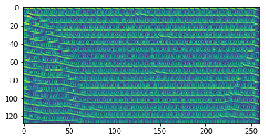
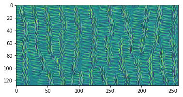
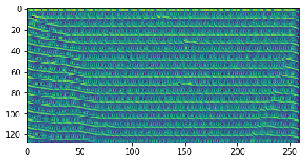
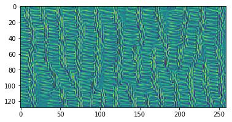


Conducted research in the MICS Laboratory of Centrale Supelec on the interpretability of deep learning models (More specifically Convolutional Neural Networks) in Audio classification. Trained Music genre classification CNNs to 80 percent accuracy on GTZAN dataset. Then used state of the art feature visualization techniques and style transfer to understand what the model really learns. Began a scientific paper draft with the supervision of Céline Hudelot, head of the Computer Science sector of the MICS Laboratory.


 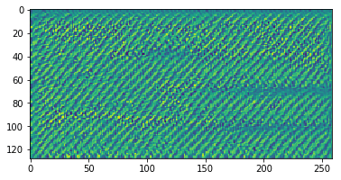
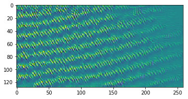
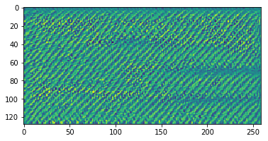
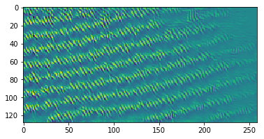
 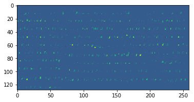
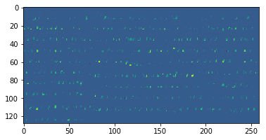

Worked with Allianz (world leading insurance company) on high level analysis of the support ticket flow to prevent quality of service risks. With a considerable amount of archived support tickets we set out to extract signals that suggest an incoming risk of quality of service caused by a bug, human error or something else. We trained state of the art Language Models on Allianz's support tickets. These tickets are often very technical and contain many spelling mistakes. This required careful tuning and analysis of the models. We overcome data engineering challenges such as memory management due to the large amount of tickets and the heavy preprocessing. We came up with a complete pipeline that would later train on labeled data in order to classify these tickets.
Implemented Deep Q Learning from scratch (using keras) from the original mnih et al 2013 article. This reinforcement learning algorithm defines an agent that learns to play a game with only the raw image as input. The agent successfully learned how to play the Chrome Trex easter egg game achieving almost human like skill.

 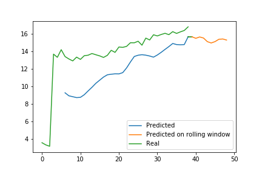
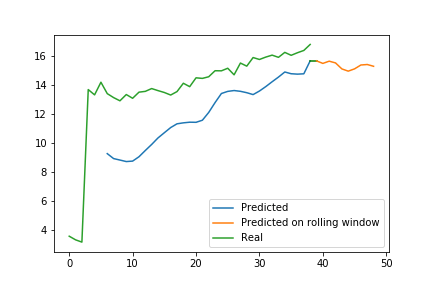


 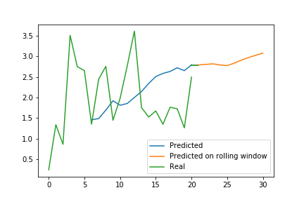
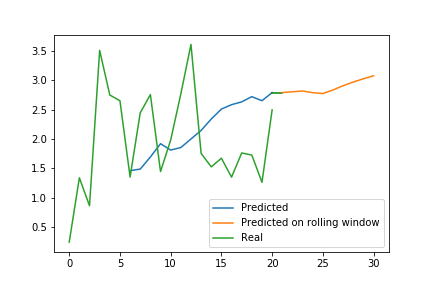

Achieved second place in the Epidemium challenge 3 with a team of twelve people. An open challenge to match cancer data with population factors (from developing countries, excluding Africa) that are thought to induce or protect against cancer, pursuing an improvement of cancer models that have rarely been explored in these regions of the world. Applied state of the art machine learning models to predict cancer mortality in developing countries given a socioeconomic context. Processed several extensive and incomplete datasets (Coming from Food and Agriculture Organization and World Health Organisation) and combined them.
 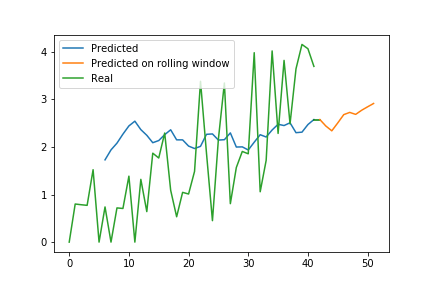
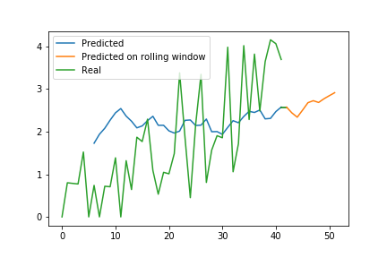


Implemented NeuroEvolution of Augmenting Topologies (NEAT) algorithm from scratch interfaced with V-REP simulation software to train a recurrent neural network with a genetic algorithm to control a double articulated crawling robot. This was my project submission to the competitive entrance exam to Engineering Schools. It is equivalent to around 350 hours of work and got an A+ grade with congratulations of the jury. Under the supervision of Mr LEGROS Stéphane and Mr MAHÉ Étienne, first and second year Maths teachers.